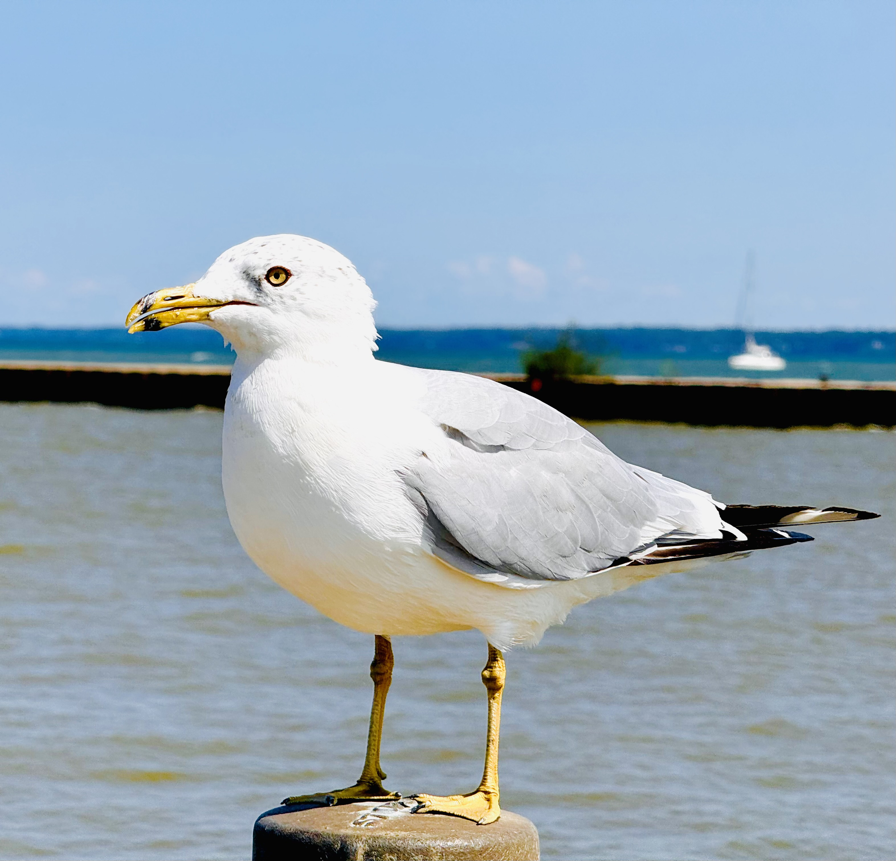
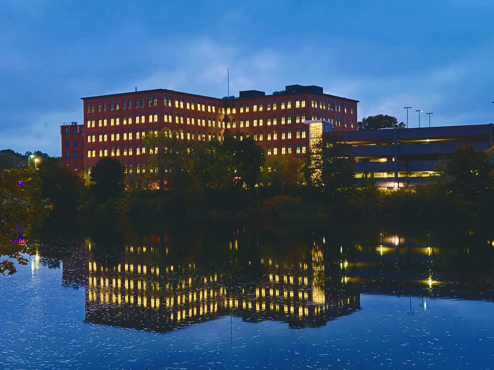
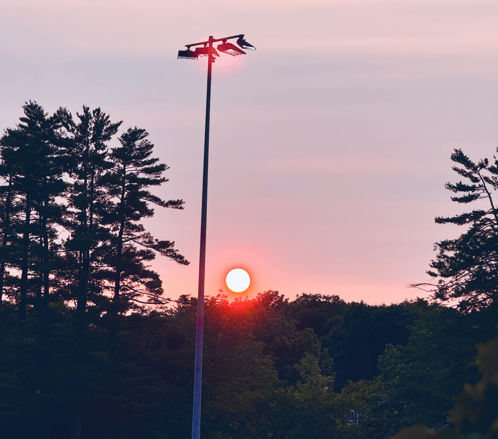
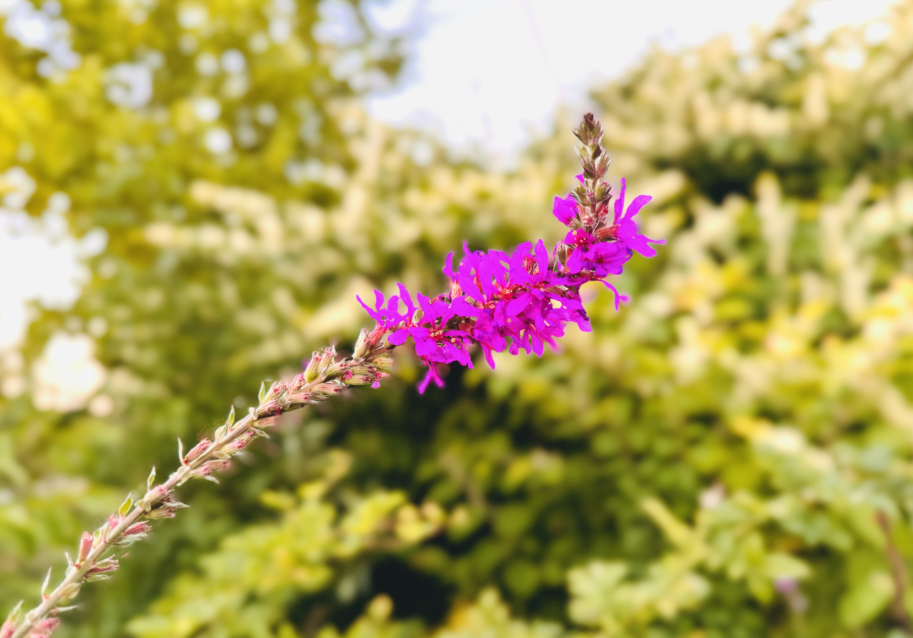

My Photography These are my shots that I took for my photography class project. Each photo reflects my practice in composition, lighting, and perspective. I focused on capturing everyday moments and turning them into visually interesting images. This project helped me improve my technical skills and develop my personal style in photography.




